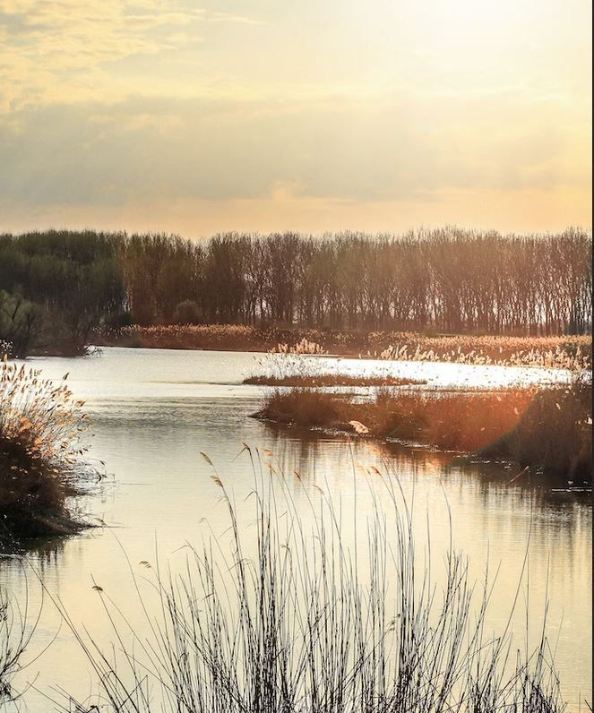

Marino Morikawa es un científico de origen peruano que utilizó todos sus ahorros y todo su conocimiento y potencial humano para salvar el Cascajo, el humedal que visitaba cuando era un niño, antes de que las autoridades lo cubran y lo hagan desaparecer.
Morikawa decidió poner manos a la obra con sus propios recursos y, a partir de la instrucción adquirida en la universidad japonesa de Tsukeba, desarrolló un sistema sencillo y económico de descontaminación, con materiales nada sofisticados que se pueden comprar en cualquier ferretería.
Morikawa dividió este humedal -uno de los 13 humedales que tiene Perú- en ocho sectores con cañas de guayaquil y de bambú. Pasó días enteros durante una semana quitando algas acuáticas (o “lechugas”, como las llama él). Mientras hacía su trabajo paciente, de a poco se le fueron uniendo voluntarios que colaboraban en la tarea.
Solo en el primer sector lograron quitar 70 toneladas de algas, con las que hicieron compost. En total llegó a tener la ayuda de más de cien voluntarios para logar sacar todas las algas del terreno. Su esfuerzo obtuvo recompensa: luego del extenso trabajo, 70 especies de aves y 3 especies de peces regresaron al humedal.
Actualmente, Marino Morikawa trabaja en la recuperación del lago Titicaca y el Río Chira, y en la construcción de satélites con inteligencia artificial para detectar la contaminación ambiental y en sistemas de purificación del agua. “Como científicos tenemos el deber de encontrar las soluciones a los problemas ambientales, diseñar nuevas tecnologías para resolver nuevos problemas, y así entregarle ese regalo a la naturaleza”, afirma Morikawa. Desde Bindi, celebramos su incentivo y su inteligencia. Y te recomendamos una de sus charlas TED para que conozcas su trabajo.